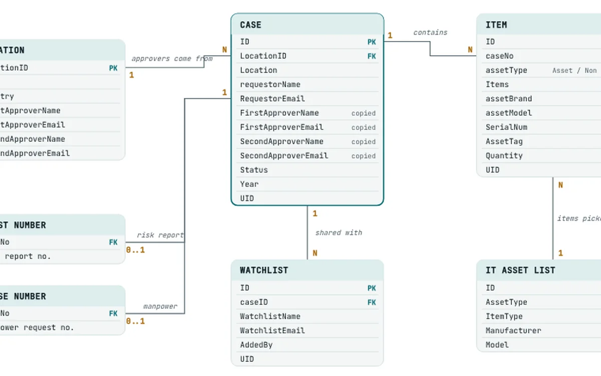

Hi, I'm Alif.
Business Analyst at Axrail · Kuala Lumpur
I work out what a business actually needs, write it down so nobody has to guess, and then, after hours, I build it myself.


Portfolio · Kuala Lumpur
Business analyst who builds what he specifies. Computer Science graduate, UTP, class of 2026.


For a school's 150 teachers
I'm Muhammad Alif Najmi, a business analyst at Axrail in Kuala Lumpur and a Computer Science graduate from UTP. By day I write requirements for banks, insurers, logistics and telco companies, and SMEs. After hours I ship apps people in Malaysia actually use.
lines of code across 8 projects on GitHub
teachers on the SMK Subang dashboard
official masjid & surau mapped in JumaatFinder
languages on KakiLima: EN, BM, 中文, தமிழ்

Nine charts before one screenThe flowcharts, ERDs and data model behind the SLB app.Read the note → A dashboard 150 teachers actually openReplacing a school's spreadsheet, with privacy at every layer.Read the note →
A dashboard 150 teachers actually openReplacing a school's spreadsheet, with privacy at every layer.Read the note →
 From coursework to something people could trustSecurity, payments, a design system and BM first.Read the note →
From coursework to something people could trustSecurity, payments, a design system and BM first.Read the note →
Press and hold to pause
Each one starts from a real problem someone told me about. Filter by what you care about.

The data hub of a real secondary school in Selangor, in use today.
Replaced a page of seven links and one messy spreadsheet that ~150 teachers had to dig through.

 v1 · FYPv2 · now
v1 · FYPv2 · now
From totals to answers: trends, what needs attention today, and whether work is going to the right people.
Skill-based task matching for teams. Started as my UTP final year project.
 v1 · courseworkv2 · now
v1 · courseworkv2 · now
From a blue banner over empty image placeholders to a bilingual intro that says who it's for and how it works.
Local events in Malaysia, starting with fishing and coastal communities.

 Before · Excel & emailAfter · the app
Before · Excel & emailAfter · the app
From a long Excel sheet per device type to one list of cases, colour-coded by status, with every item and its approver in one place.
SLB internship, 2025. Turned an e-waste process run on email chains and Excel into one app.
Before: items logged one by one in a spreadsheet, then approved through a chain of emails to the IT Manager and Finance Controller.

A community hub for safer streets, walkable sidewalks and better public transport.

Find the nearest place for Solat Jumaat, and know when to leave.
Nothing matches that filter.
A single-VPC architecture with a public web tier and an isolated private tier, locked down with tag-based IAM policies, security groups and route tables, plus a cost-optimisation report.
In the Solution Architect team, delivering data and AI solutions for banking, insurance, logistics, telecommunications and SME clients. I gather requirements, map current processes, write functional documentation, and find the gaps where AI meets existing systems.
I compare and rate large language model responses side by side against detailed quality rubrics, and write the reasoning behind each call. The preference data is used to train and improve AI models.
Three apps for real Malaysian problems: broken sidewalks, finding Friday prayers, and a school drowning in spreadsheets.
Second Class Upper. Major in Enterprise Systems, minor in Corporate Management. MARA Young Talent Development Programme scholar. Degree conferred at UTP's convocation, Nov 2026.
A skill-based recommendation system for student project teams, now rebuilt as TaskMatch v2.
Built the IT Asset Disposal app end to end with SLB's in-house GoDigital developers. Also helped roll out E-TCard check-in, ran a site-wide CCTV survey and assessed the disposal lifecycle's impact.
Started a coding-competition committee and a tech speaker series, launched the society's website, and took 42 students to the Tesla Experience Centre.
Started on records and committee coordination, then ran tournaments as VP that brought in revenue and grew membership by about 15%.
Mobile Legends: Bang Bang at UTP SPORTTECH 2023. Second at UTP Super Sports and UTP Legends in 2025.
Malay and English (native), Indonesian (professional working), plus elementary Mandarin and French.
Ran media and Instagram for DENDROBYTES, a student AI and coding outreach programme.
I want to help people and help lift Malaysia up. Right now it's baby steps, but every skill I pick up is a step towards that. And corruption has no place in this country.